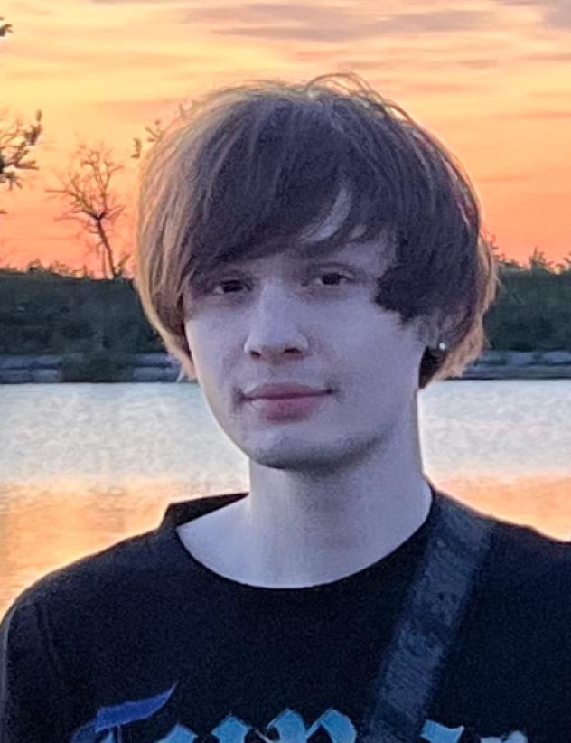

Front-end devoloper
Gleb Lisovenko

About me
Skills
- Photoshop
- Addobe Premier Pro
- Sony Vegas Pro
Education
Lviv National University of Veterinary Medicine
and Biotechnology named after S.Z. Hzhytskyi
(2021-2025)
From an early age, I have always dreamed of traveling and discovering new horizons. This interest in exploration led me to study law, and now I am studying at the S.Z. Grzycki Lviv National University of Veterinary Medicine and Biotechnology. I enjoy understanding complex legal issues and seeking justice. However, my curiosity is not limited only to law. Programming has always been my secret passion. In my free time, I study different programming languages and create small projects. I believe that the combination of legal and technical education will help me find innovative solutions and build a successful career in the future. Traveling also holds a special place in my life. They give me the opportunity to broaden my horizons, get to know different cultures and have unforgettable experiences. Each new trip is an opportunity to see the world from a new perspective and to understand myself better.
Languages
- Ukraine - native speaker
- Russian - native speaker
- English - A2